Business Terms Capability
On large platforms, teams define the same business concept in different ways, so the same data means different things across products. BTC gives FICO Platform users one shared definition that every product uses.
I led its design end to end, from an embeddable component other teams adopted to a standalone workspace for technical and business users.
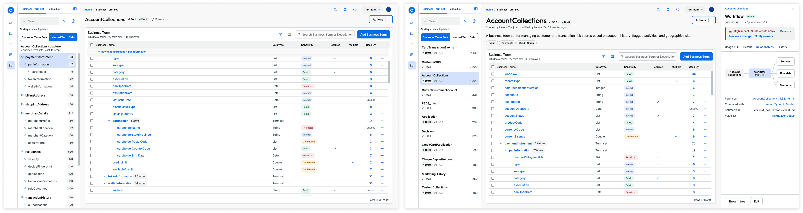
Problem Statement
As businesses grow, teams describe the same data in different ways, causing mix-ups, delays, and costly mistakes.
FICO's DMP (Decision Management Platform) Business Terms Manager listed data but didn't explain or connect it. Users juggled separate tools, relied on memory to track what each term meant, and often needed FICO's help just to stay organized. The dependence on FICO support was a recurring theme in consultant interviews, costing clients time and diverting FICO's own experts from other priorities.
The Existing Tool
Business Terms Manager captured names and types, not meaning or relationships. The same field appeared across sets with no sign of whether it meant the same thing, and inconsistencies went unchecked. Without visibility into what depended on a term, changes felt risky, so users relied on memory, external tools, and FICO's support.
The Approach
BTC is the workspace where FICO Platform users build and manage their data models.
It replaces the fragmented, modal-driven process with a single searchable table where terms are imported once, paired with a plain business definition instead of a technical name, and connected to the terms they relate to.

Impact
From 3+ weeks to seconds
Users import and define their own terms directly in BTC, instead of waiting on FICO consultants to set up their data.
Built once, embedded everywhere
Designed as a micro-frontend, BTC was adopted immediately by the Decision Trees and Feature Management teams and 3 others, with no custom design work needed in their products.
Validated demand for what's next
The canvas concept drew strong interest from internal Solution Consultants and FICO World 2025 attendees, shaping the product's roadmap.
Personas
Primary Users (Platform wide)Business Expert
The day-to-day user, authoring rules that reference these terms directly. Needs plain business definitions, not field names, and a clear answer to "is it safe to change this?"
Solution Owner
Coordinates across teams and is accountable for outcomes they can't fully control. Needs one consistent model to reuse work and catch cross-team impact before it becomes rework.
Technical Expert
The builder and owner of the data model. They need to see relationships and dependencies so they can change things without surprises. Otherwise, they're the one called in to "unbreak" it.
All 3 personas shared the same underlying pain of not knowing what a change will affect. It shows up as hesitation for the Business Expert, rework for the Solution Owner, and firefighting for the Technical Expert.
Key Design Decisions
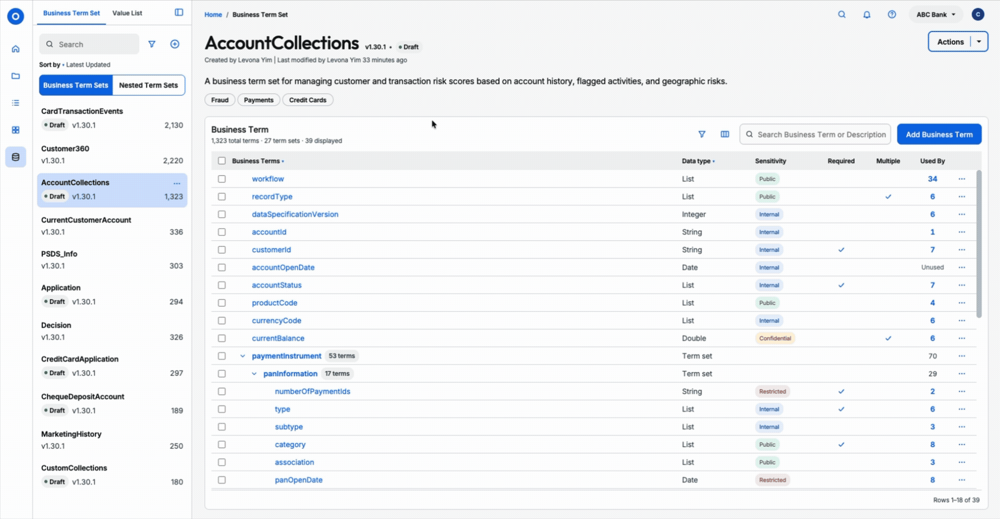
Reason for design: After understanding the 3 main personas for BTC, the pain point was the fear the impact a change could have.
I designed BTC to keep cross-domain usage constantly visible. When a user selects a Business Term or Term Set, it shows users the exact scale of impact and which domains would be affected before any change is committed.
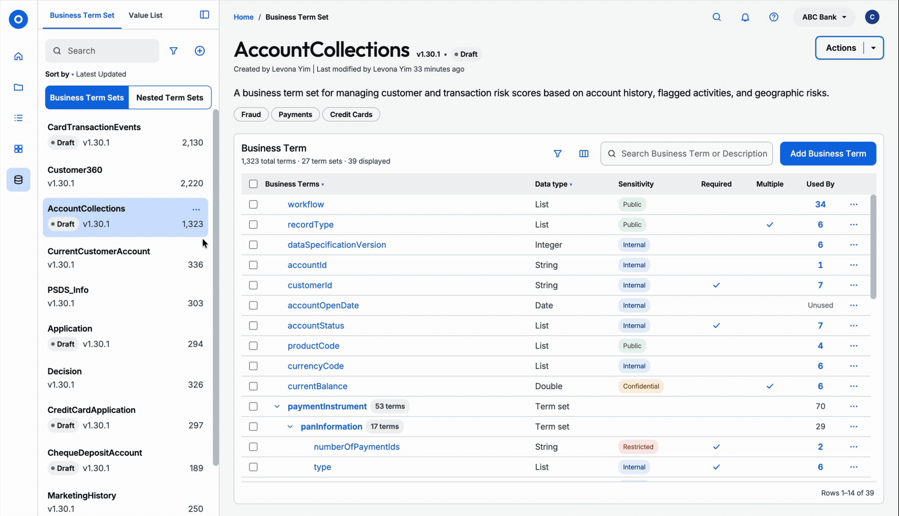
Reason for design: Business Term Sets can hold 1000+ of Business Terms. Just having pagination and searching alone wouldn't suffice.
I designed:
- Collapsible Grouping & Path Visibility: The table to group nested Business Term Sets into collapsible rows that explicitly surface the parent-child path and total nested term count.
- Side-Panel Outline Navigation: Integrated an interactive structural tree in the side panel, allowing users to skim the hierarchy and jump directly to specific term sets without tedious page scrolling.
- Targeted Search & Multi-Facet Filtering: Added search with contextual filters to help users narrow down thousands of terms in seconds.
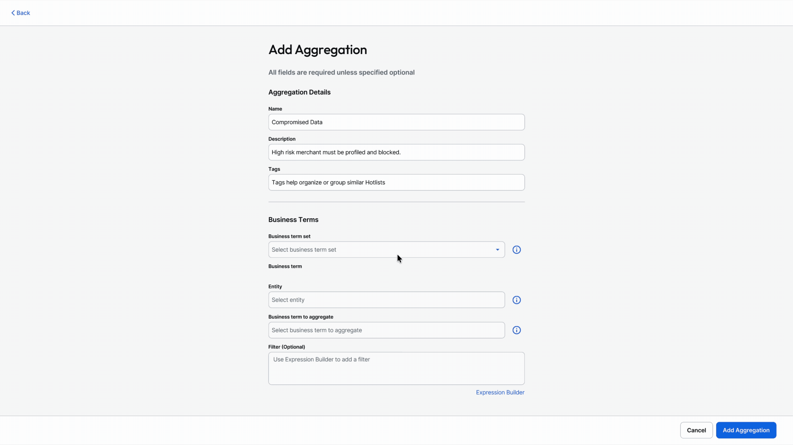
Reason for design: We didn't want the users to context switch back and forth between different services.
I collaborated with the PM, engineers, and architect to scope out the critical 20% to design a standalone, modular component other teams could plug into.
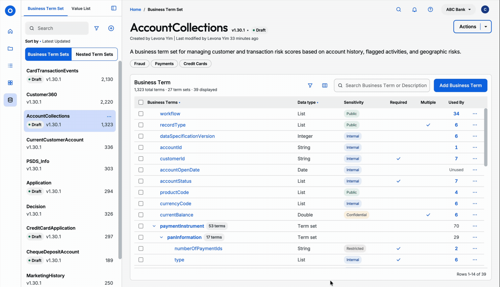
I designed a way for users to configure the table how they like. Users can choose to show, hide and reorder columns, switch to a compact view, and expand every term set at once.
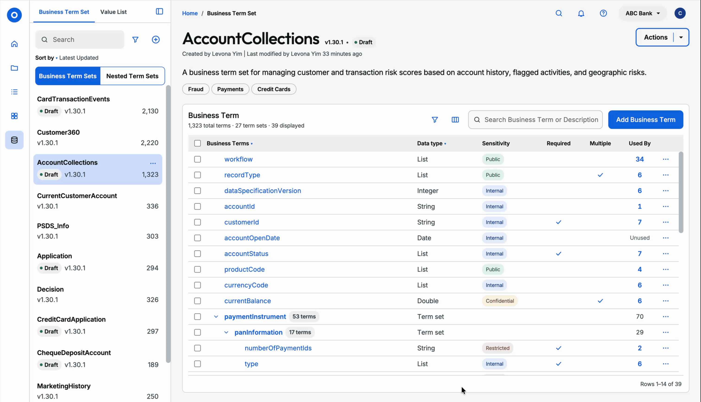
A need for bulk actions is necessary especially when there can be 1000s of Business Terms and many Business Term Sets.
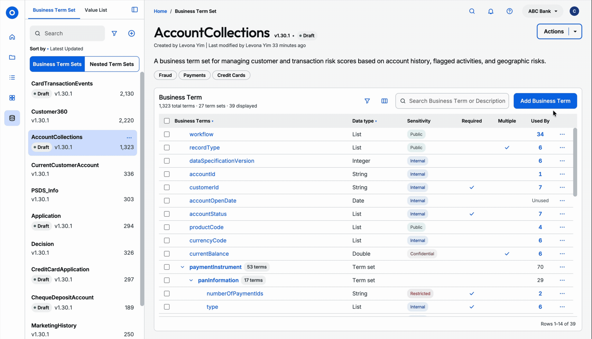
Internal Solution Architects frequently complained about BTM's stacked modals. Instead, I replaced the modal with a full-page view that can accomodate complex inputs without visual clutter.
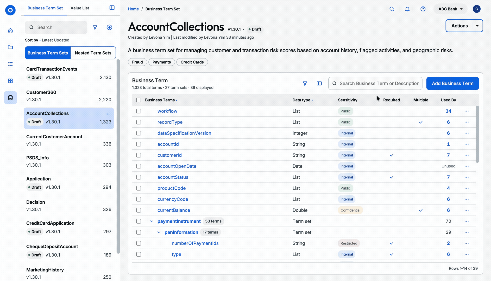
Both light and dark modes are supported, and all components and colours meet the 90% WCAG AA standard.
Post-FICO
FICO World 2025 and internal stakeholder feedback validated real demand for where BTC could go next. On my own time, I kept designing past the scope of my role — here's how I'd take it from a single tool to a platform other teams build on:
- Scalable navigation & component architecture — re-architected the platform's navigation as a shared foundation rather than a one-off screen, so the same investment that unified Table and Canvas scales to whatever view BTC needs next, without another rebuild
- Contextual AI integration — the "3+ weeks to seconds" win came from letting users self-serve their own data; an AI system that reads a user's first data blocks to predict schema intent is the next lever on that same number
- Project dashboards & draft sandboxes — a landing experience for managing multiple active projects or prototyping freely in a sandbox first, extending that same self-serve confidence to messier, higher-risk changes users were previously afraid to make
- Verified templates — a template library pairing certified FICO frameworks with AI-assisted templates generated from a team's own governance models, turning tribal schema knowledge into a reusable, auditable asset instead of something re-explained to every new team
- Unified analytics & aggregation — the concept that drew the strongest interest at FICO World 2025 and shaped the roadmap, mapped out here as embedded live data aggregations, closing the loop on that feedback with an actual design instead of leaving it as a wishlist item
Further Explorations
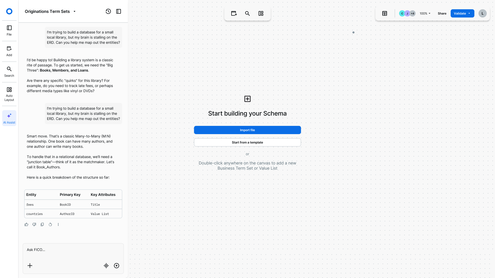
Reason for design: The "3+ weeks to seconds" win came from letting users self-serve their own data — but that still assumes users already know their own schema shape going in.
I designed an AI assist that asks clarifying questions and proposes structure with its reasoning shown, not just an autofilled result, so users can trust why a suggestion was made instead of accepting a black box.
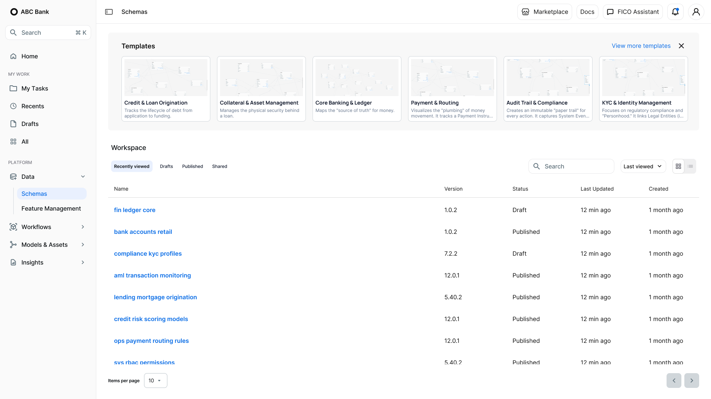
Reason for design: The original BTC flow had no home base — no way to see, resume, or compare in-progress work across projects.
I designed a landing workspace with curated domain templates (Credit & Loan Origination, KYC, Compliance, and others) alongside a project list showing version and draft/published status, so teams pick up where they left off instead of hunting for their term set.
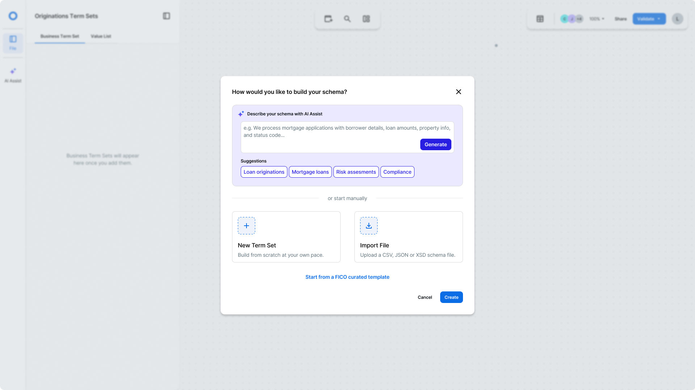
Reason for design: Every team was rebuilding similar schemas (fraud, compliance, lending) from scratch, re-explaining the same governance rules each time.
I designed a single "how would you like to build your schema" entry point pairing certified FICO templates with AI-generated starting points, turning tribal schema knowledge into a reusable, auditable asset.